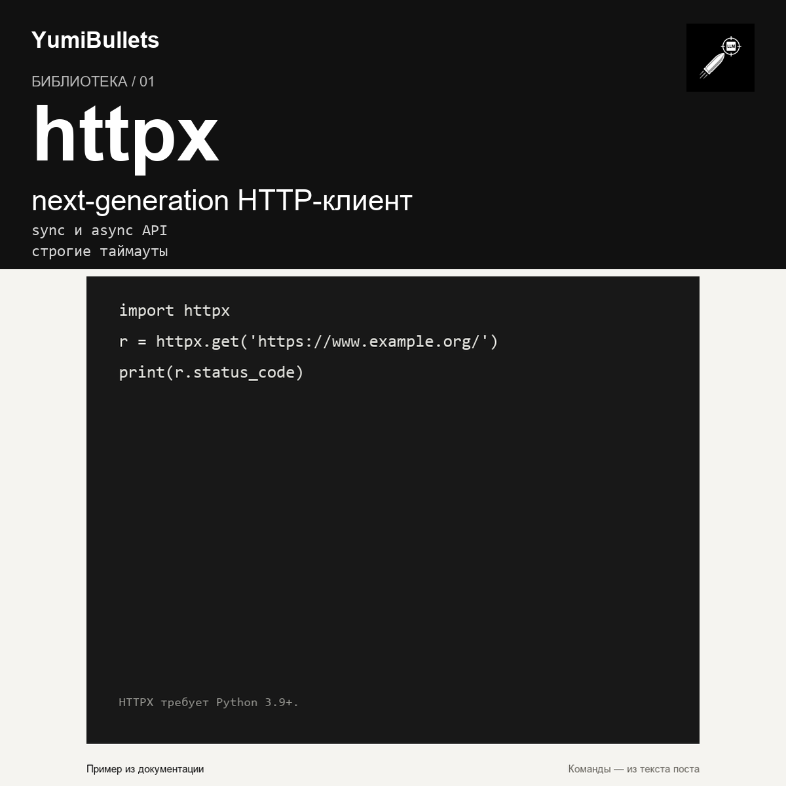

HTTPX: современный HTTP-клиент для Python
Установите httpx, замените requests.get на httpx.get и проверьте, что тот же запрос работает с явным timeout. Проект продолжает поддерживать Python 3.9+, полностью типизирован и…

Установите httpx, замените requests.get на httpx.get и проверьте, что тот же запрос работает с явным timeout. Проект продолжает поддерживать Python 3.9+, полностью типизирован и…